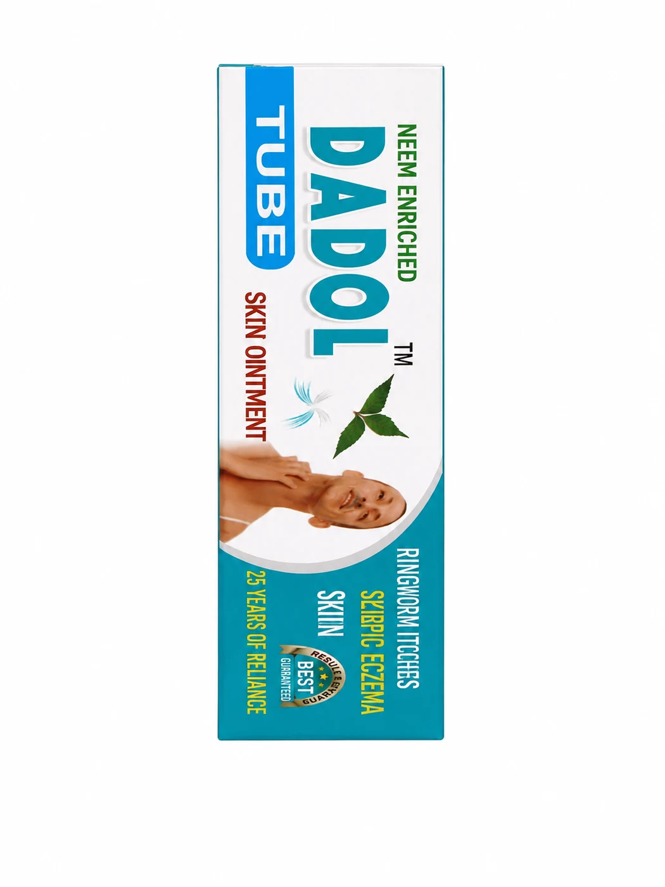

Women's Wellness
QuasoCOL
This proprietary Ayurvedic medicine is a comprehensive herbal formula primarily indicated for addressing menstrual disorders, including painful, irregular, or delayed cycles. Enriched…
MRP from₹140View product
Quality Pharmaceuticals product catalogue
Explore our licensed, GMP-certified Ayurvedic range across digestive health, women’s wellness, baby and family care, tonics, oils, and more.
Browse with confidence
Every product page brings together the available label and brochure information: indications, Hindi indications where provided, ingredients, dose, suitable-for guidance, packing, MRP, and direct enquiry options.
See how our products are made3 products
Ayurvedic formulations presented for women’s everyday wellness and reproductive-health support.
This proprietary Ayurvedic medicine is a comprehensive herbal formula primarily indicated for addressing menstrual disorders, including painful, irregular, or delayed cycles. Enriched…

A proprietary Ayurvedic medicine for women’s health, Femina Capsules are formulated to support menstrual wellness and help in conditions related to irregular, painful, scanty, or…

M.C Plus is a specialized Ayurvedic proprietary medicine formulated to support women's menstrual disorders. Designed for menstrual irregularities, these capsules leverage a traditional…
1 product
Ayurvedic tonics and formulations for liver, appetite, vitality, and general wellness support.

Liv-top Syrup is marketed as a Liver Stimulant & Tonic and is intended to be a dietary supplement. Enriched with powerful Ayurvedic herbs including Bhringraj, Arjun bark, Makoi, and…
1 product
Ayurvedic respiratory-care formulations with traditional herbal ingredients.

QoughSol is an herbal cough syrup that provides quick relief from various cough symptoms. As a GMP-certified product established in 1967, it blends long-standing tradition with…
4 products
Family-focused Ayurvedic products, including baby tonics, gripe water, and massage oil.
1.PNG.png.webp)
Infantol (Babies Tonic) is a gentle health tonic specially formulated for babies to support healthy growth, digestion, immunity, and overall development. Made with carefully selected…

Infantol (Family Tonic) is a nourishing family health tonic formulated to support overall wellness, immunity, digestion, and daily energy levels. Enriched with beneficial herbal…

Quality Lal Tel is a premium baby massage oil specially formulated to strengthen bones and improve muscle tone. Enriched with Till Oil (Sesame) and traditional herbs like Shankhapushpi…

Quality Gripe Water is a proprietary Ayurvedic medicine formulated for infants and young children to support relief from indigestion, acidity, griping, flatulence, and digestive…
1 product
Restorative Ayurvedic tonics created for everyday energy and wellness support.

EnergyOn Syrup is a proprietary Ayurvedic restorative tonic designed to support overall physical and mental well-being. Formulated with Ashwagandha, Shatavari, Kesar (Saffron), and…
1 product
Topical Ayurvedic care for skin-related indications listed in the product literature.

This Ayurvedic skin ointment is a specialized herbal formula enriched with Neem to effectively treat various fungal and inflammatory skin conditions. It is specifically indicated for…
1 product
Ayurvedic oil for massage and the joint- and muscle-related indications listed on the product.

This Joint Pain Reliever Oil is a premium Ayurvedic formulation designed to provide fast and effective relief from chronic discomfort. Enriched with Ashwagandha, Shatavari, and Maha…
1 product
Traditional Ayurvedic ear-care formulation with clear use and dosage information.

Earol Ear Drops is a proprietary Ayurvedic formulation designed to provide fast-acting and comprehensive relief from common ear discomforts including ear-ache, itching, ear wax…
4 products
Ayurvedic syrups, tablets, and churan for digestive-health indications.

Mangal Prabhat Churn is a time-tested Ayurvedic remedy formulated to combat chronic constipation, hyperacidity, and heartburn. This GMP-certified, Saunf-flavored churan promotes…

Amrit Anti-Diarrheal Tablets provide a trusted, natural approach to digestive health. This Ayurvedic remedy is specifically formulated to manage diarrhea and dysentery, helping to…

Gas-Q Gastric Syrup is a premium Ayurvedic digestive aid designed to provide rapid relief from gastric problems, acidity, and flatulence. Utilizing Saunf, Podina, Ajmoda, and Jeera,…

Dige-Q Digestive Syrup is an Ayurvedic medicine formulated over 51 years in healthcare. This GMP-certified syrup is an effective remedy for indigestion, lack of appetite, and various…
1 product
Ayurvedic formulation presented for fever-related indications in the product literature.

MALMIX Syrup is a proprietary Ayurvedic medicine formulated to act as an effective anti-malarial and anti-pyretic treatment. This time-tested remedy, with a heritage dating back to…
1 product
Ayurvedic tonic for memory, concentration, and wellness support.

Memory-Q Syrup is a premium Ayurvedic brain tonic formulated with Shankhapushpi, Brahmi, Amla, Jatamansi, Vacha, Ashwagandha, Nagkeshar, and Gokhru to support memory, concentration,…
Product catalogue questions
Each product has a dedicated page with the available dosage, suitable-for guidance, indications, results, packing and ingredient information.
Use the enquiry button on a product page or contact Quality Pharmaceuticals on +91 73553 61236 during published business hours.
Quality Pharmaceuticals presents its Ayurvedic range as manufactured under its GMP-certified and licensed manufacturing framework.
Where available in the product literature, Hindi indications are retained alongside the English text on each product page.